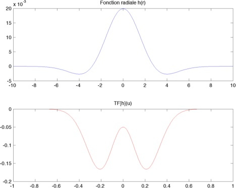
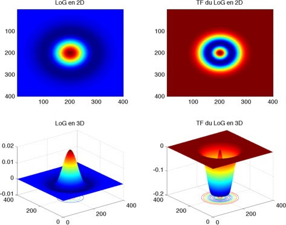

Un billet suite à la question d’une étudiante au sujet du TP de traitement d’image.
Dans la partie Opérateurs laplacien et FFT, on demande d’approximer le filtre Laplacien par une couronne dans le domaine fréquentiel. Sa question est la suivante :
Je ne comprends plus trop le rapport avec le laplacien […] Autre petit problème, les rayons de la couronne sont très difficiles à trouver et varient suivant les images…
C’est une bonne question ! Premièrement :
Quel rapport entre la couronne et le Laplacien ?
Le Laplacien est un opérateur qui est particulièrement sensible au bruit, par conséquent avant d’appliquer le filtre laplacien \(\Delta=\frac{\partial^2}{\partial x^2}+\frac{\partial^2}{\partial y^2}\) à l’image \(I\) on commence par lisser cette dernière par un filtre gaussien \[G_{\sigma}(x,y)=\frac{1}{2\pi \sigma^2}e^{-\frac{(x^2+y^2)}{2\sigma^2}}\] Les opérateurs linéaires tels que \(\Delta\) commutent avec la convolution d’où \[(I\ast G_{\sigma})\ast \Delta=I\ast (G_{\sigma}\ast \Delta)=I\ast (\Delta \ast G_{\sigma})=I\ast (\Delta G_{\sigma})\]
Le filtre \(\Delta G_{\sigma}\) est communément appelé filtre LoG (Laplacian of Gaussian). Un rapide calcul donne : \[\Delta G_{\sigma}(x,y)=\frac{1}{\pi \sigma^4}\left(\frac{x^2+y^2}{2\sigma^2}-1\right)e^{-\frac{(x^2+y^2)}{2\sigma^2}}\]
En posant \(r=\sqrt{x^2+y^2}\) la distance radiale, on a \[h(r):=\Delta G_{\sigma}(r)=\frac{1}{\pi \sigma^4}\left(\frac{r^2}{2\sigma^2}-1\right)e^{-\frac{r^2}{2\sigma^2}}\]
Notons \[g(x)=\frac{1}{2\pi \sigma^2}e^{-\frac{x^2}{2\sigma^2}}\] \[g'(x)=-\frac{1}{2\pi \sigma^4}xe^{-\frac{x^2}{2\sigma^2}}\] \[(g')'(x)=\frac{1}{2\pi \sigma^4}\left(\frac{x^2}{\sigma^2}-1\right)e^{-\frac{x^2}{2\sigma^2}}\]
Par conséquent on a \[h(r)=(g')'(r)-\frac{1}{\sigma^2}g(r)\] d’où \[\hat h(u)=-4\pi^2 u^2 \hat g(u)-\frac{1}{\sigma^2} \hat g(u)\]
Or la transformée d’une gaussienne est une gaussienne donc \[\hat g(u)=\frac{1}{\sqrt{2\pi}\sigma}e^{-2\pi^2\sigma^2 u^2}\]
Ainsi \[\hat h(u)=-\frac{1}{\sqrt{2\pi}\sigma^3}(4\pi^2\sigma^2u^2+1)e^{-2\pi^2\sigma^2 u^2}\]
Voilà pour les fonctions radiales à une dimension, revenons à la 2D et calculons \[\mathcal{F}(\Delta G_{\sigma})(u,v)=-4\pi^2(u^2+v^2)\mathcal{F}(G_{\sigma})=-4\pi^2(u^2+v^2)e^{-2\pi^2 \sigma^2(u^2+v^2)}\]
Traçons maintenant \(h(r)\), \(\hat h(u)\)

puis \(\Delta G_{\sigma}(x,y)\) et \(\mathcal{F}(\Delta G_{\sigma})(u,v)\)

On constate effectivement que dans le domaine fréquentiel le LoG est non nul sur une “couronne” (en bleu sur la figure en haut à droite) ! :)
Comment déterminer les rayons de la couronne ?
Essayez à partir de la formule de \(\mathcal{F}(\Delta G_{\sigma})(u,v)\) (en radial) de relier \(r_1\) et \(r_2\) à \(\sigma\) (le paramètre de lissage) !
Enfin quelques remarques pour terminer :
- Le LoG (en 3D représenté en bas à gauche) est un cas particulier de “Mexican hat” (chapeau mexicain de par sa forme), qui est un filtre passe-bande très utilisé dans la décomposition en ondelettes.
- Le LoG est la limite d’une DoG (Difference of Gaussian), plus précisément : \[DoG_{\sigma_1,\sigma_2}(x,y)=\frac{1}{2\pi \sigma_1^2} e^{-\frac{(x^2 + y^2)}{2 \sigma_1^2}} - \frac{1}{2\pi \sigma_2^2} e^{-\frac{(x^2 + y^2)}{2 \sigma_2^2}}\]
- On peut montrer que \(DoG_{\sigma_1,\sigma_2}\) est une bonne approximation de \(LoG\) lorsque \[\frac{\sigma_2}{\sigma_1}=1,6\]
Annexe : code Matlab des figures
N = 400;
sigma = 2;
h2=figure;
r = linspace(-10,10,N);
h = (1-r.^2./(2*sigma^2)).*exp(-r.^2./(2*sigma^2))./(pi*sigma^4);
subplot(2,1,1);
plot(r,h);
title('Fonction radiale h(r)')
r = linspace(-1,1,N);
hf = -(4.*pi^2.*sigma^2.*r.^2+1).*exp(-2.*pi^2.*r.^2)./(sqrt(2.*pi).*sigma^3);
subplot(2,1,2);
plot(r,hf,'r');
title('TF[h](u)')
set(gcf, 'color', [1 1 1])
export_fig(h2,'LoG_2D.jpg');
h1=figure;
[x,y] = meshgrid(linspace(-4*sigma,4*sigma,N));
r = x.^2+y.^2;
z = (1-r./(2*sigma^2)).*exp(-r./(2*sigma^2))./(pi*sigma^4);
subplot(2,2,1);
imagesc(z)
title('LoG en 2D');
subplot(2,2,3);
surfc(z), shading flat
title('LoG en 3D');
[x,y] = meshgrid(linspace(-0.5,0.5,N));
r = x.^2+y.^2;
z = -4*pi^2.*r.*exp(-2*pi^2*sigma^2.*r);
subplot(2,2,2);
imagesc(z)
title('TF du LoG en 2D');
subplot(2,2,4);
surfc(z), shading flat
title('TF du LoG en 3D');
set(gcf, 'color', [1 1 1])
export_fig(h1,'LoG_3D.jpg');